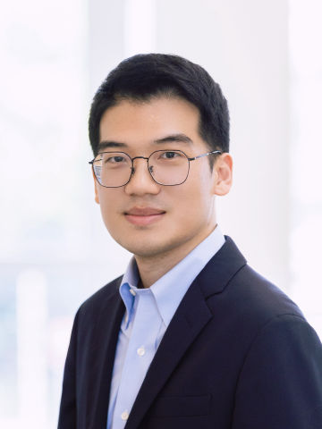
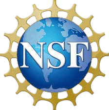
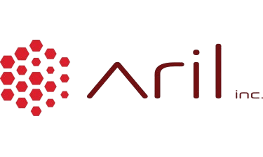

MICRO’26
KAIROS: Fast Microarchitectural Design Space Exploration by Bridging Architectural Semantics and Logic Gates
IEEE/ACM International Symposium on Microarchitecture (MICRO) · Athens, Greece · Oct 31 – Nov 4, 2026 · To appear
Computer architecture & machine learning
Electrical & Computer Engineering/University of Central Florida
Building Scalable, Efficient, and Adaptive Computing Infrastructure for AI: From Silicon to Algorithms

About
Hao Zheng is a tenure-track Assistant Professor in the Department of Electrical and Computer Engineering at the University of Central Florida, where he directs the iCAT lab.
He received his Ph.D. from George Washington University, advised by Prof. Ahmed Louri. His research interests are in computer architecture and machine learning, with emphasis on AI/ML systems, hardware accelerators, on- and off-chip communication, manycore processors, chiplet-based systems, and AI-assisted chip design. His work has been published in top-tier computer architecture and EDA conferences and journals such as ISCA, MICRO, HPCA, DAC, ICCAD, DATE, TPDS, and TETC.
He is a recipient of the NSF CAREER Award and the UCF Reach for the Stars Award. He has served on organizing and technical program committees for top computer systems conferences and as a panelist for multiple NSF programs. He currently serves as Associate Editor-in-Chief for IEEE Transactions on Computers and as an Associate Editor for IEEE Transactions on Sustainable Computing.
If you are interested in serving as a reviewer for IEEE TC, please fill out the reviewer form.
Selected work
The complete list, with PDFs and code, is on the publications page.
Graduate research and teaching assistantships are available for prospective Ph.D. students. If the work here interests you, send a CV and transcripts using the contact link.
Publications
Venues marked in amber are top-tier computer science conferences as listed on csrankings.org. Search by title, author, or venue.
IEEE/ACM International Symposium on Microarchitecture (MICRO) · Athens, Greece · Oct 31 – Nov 4, 2026 · To appear
IEEE/ACM International Symposium on Microarchitecture (MICRO) · Athens, Greece · Oct 31 – Nov 4, 2026 · To appear
IEEE/ACM International Symposium on Microarchitecture (MICRO) · Athens, Greece · Oct 31 – Nov 4, 2026 · To appear
IEEE/ACM International Symposium on Microarchitecture (MICRO) · Athens, Greece · Oct 31 – Nov 4, 2026 · To appear
ACM/IEEE International Symposium on Computer Architecture (ISCA) · Raleigh, NC · Jun 27 – Jul 1, 2026
Design Automation Conference (DAC) · Long Beach, CA · Jul 2026
IEEE International Symposium on High-Performance Computer Architecture (HPCA) · Sydney, Australia · Jan 2026
International Conference on Neuro-Symbolic Systems (NeuS) · Los Angeles, CA · Jun 16–18, 2026
Annual Conference on Neural Information Processing Systems (NeurIPS) · San Diego, CA · Dec 2–7, 2025
IEEE/ACM International Symposium on Microarchitecture (MICRO) · Seoul, South Korea · Oct 2025
ACM/IEEE International Symposium on Computer Architecture (ISCA) · Tokyo, Japan · Jun 2025
IEEE International Symposium on High-Performance Computer Architecture (HPCA) · Las Vegas, NV · Mar 2025
IEEE/ACM International Symposium on Microarchitecture (MICRO) · Austin, TX · Nov 2–6, 2024
ACM/IEEE International Conference on Computer-Aided Design (ICCAD) · New Jersey, USA · Oct 2024
51st International Symposium on Computer Architecture (ISCA) · Buenos Aires, Argentina · Jun 29 – Jul 3, 2024
61st Design Automation Conference (DAC) · San Francisco, CA · Jun 23–27, 2024
IEEE International Parallel & Distributed Processing Symposium (IPDPS) · San Francisco, CA · May 27–31, 2024
IEEE Transactions on Parallel and Distributed Systems · 2024
ACM/IEEE Asia and South Pacific Design Automation Conference (ASP-DAC) · Tokyo, Japan · Jan 22–25, 2024
IEEE International Conference on Computer Design (ICCD) · Washington, DC · Nov 6–8, 2023
International Conference on Computer-Aided Design (ICCAD) · San Francisco, CA · Oct 29 – Nov 2, 2023
International Conference on Computer-Aided Design (ICCAD) · San Francisco, CA · Oct 29 – Nov 2, 2023
International Conference on Computer-Aided Design (ICCAD) · San Francisco, CA · Oct 29 – Nov 2, 2023
60th Design Automation Conference (DAC) · San Francisco, CA · Jul 9–13, 2023
50th International Symposium on Computer Architecture (ISCA) · Orlando, FL · Jun 17–21, 2023
33rd ACM Great Lakes Symposium on VLSI (GLSVLSI) · Jun 5–7, 2023
31st IEEE International Symposium on Field-Programmable Custom Computing Machines (FCCM) · Marina Del Rey, CA · May 8–11, 2023
IEEE Transactions on Sustainable Computing · 2023
Journal of Computer Science and Technology · Feb 2023
IEEE Transactions on Circuits and Systems I — Special Issue on Circuits and Systems for Emerging Computing Paradigms · Apr 2022
32nd ACM Great Lakes Symposium on VLSI (GLSVLSI) · Jun 6–8, 2022
25th Design, Automation & Test in Europe Conference (DATE) · Mar 14–23, 2022
IEEE Transactions on Parallel and Distributed Systems — Special Section on Parallel and Distributed Computing Techniques for AI, ML, and DL · 2021
IEEE Transactions on Sustainable Computing · 2021
27th IEEE International Symposium on High-Performance Computer Architecture (HPCA) · Seoul, South Korea · Feb 27 – Mar 3, 2021
57th Design Automation Conference (DAC) · Virtual · Jul 19–23, 2020
IEEE Transactions on Emerging Topics in Computing (TETC) · Jun 2020 · DOI 10.1109/TETC.2020.3003496
IEEE Micro — Special Issue on Machine Learning for Systems · Sep/Oct 2020
56th Design Automation Conference (DAC) · Las Vegas, NV · Jun 2–6, 2019
IEEE Computer Architecture Letters (CAL) · vol. 17, no. 1, pp. 88–91 · 2018
U.S. Patent · Granted Nov 2022
U.S. Patent · Granted Nov 2022
U.S. Patent · Granted Jan 2025
U.S. Patent · Filed Jul 2024 · Pending
No publications match that search.
iCAT
UCF has strong graduate programs in computer engineering. Per CSRankings, UCF stands at No. 15 in the U.S. in computer architecture and No. 5 in EDA; the computer engineering program ranked No. 50 in the 2023 U.S. News & World Report. Lab members have gone on to academia and industry — NUAA, Apple, AMD, and quantitative finance — within a short time of graduating.
Students at iCAT get a well-rounded grounding in computer systems and machine learning design: theory, modeling and simulation, performance evaluation, and physical implementation. You will collaborate with researchers across the country and work on industry-scale projects that turn our research into real products. Every student is supported for conference travel each year.
The lab culture is supportive and inclusive. We care about your growth, your health, and where you go next. The mentoring philosophy is simple: give you every resource you need to do work that matters, while making sure you actually enjoy the Ph.D. Every student is different, and your perspective counts.
Successful candidates are motivated, willing to learn new concepts, and want to work at the frontier of this field. We expect:
Graduate research and teaching assistantships are available for prospective Ph.D. students. Send your CV and transcripts using the contact link.
Dean's Dissertation Fellowship · ORC Fellowship
ECE Best Graduate Researcher Award · FFL Fellowship · ORC Fellowship
AMD Fellowship





Teaching
Be a responsible educator.
EEL 4768
Undergraduate · Fall 2021 – Spring 2025
EEL 6938
Graduate · Spring 2024, Fall 2025
Enrolled students should use Webcourses@UCF for slides, assignments, and announcements. For questions about enrolling or prerequisites, use the contact link.
Professional activities
If you would like to serve as a reviewer for IEEE TC, please fill out the reviewer interest form.
News
KAIROS, Argus, DireLeak, and MOSAIC will appear in Athens.
Sparse high-order tensor acceleration via co-occurrence graphs.
A unified memory-efficient accelerator for pangenome chaining and alignment.
Scaling graph neural network training via geometric optimization.
Gated multi-hop message passing for homophily-agnostic node representation.
Rethinking tiling and dataflow for SpMM acceleration.
An accelerator for distributed dynamic GNN inference.
A graph dissimilarity-based framework for DGNN accelerators.
A structure-centric accelerator for message passing GNNs.
RTL post-PnR delay prediction.
Side channels in secure memory architectures.
Two papers at the 61st Design Automation Conference.
Three papers accepted in the same season.
Supporting their undergraduate research projects.
US 11502934 and US 11489788.
We received an equipment donation from Xilinx. Thank you, Xilinx.
We received a grant from L3Harris, a leading aerospace and defense technology innovator. Thank you, L3Harris.
Cloud credits from NVIDIA supporting our work on machine learning training. Thank you, NVIDIA.
Hao Zheng was invited to serve on the technical program committee for NAS 2022.
Starting the iCAT lab.